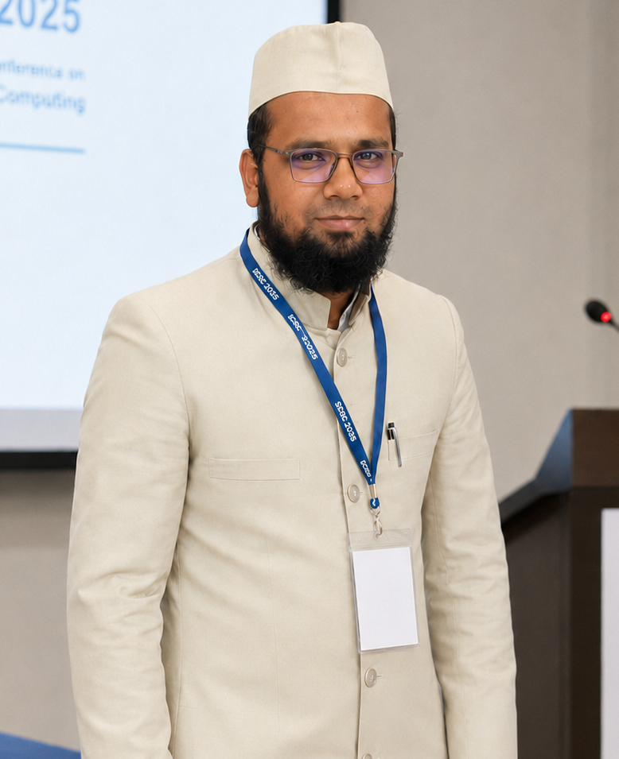
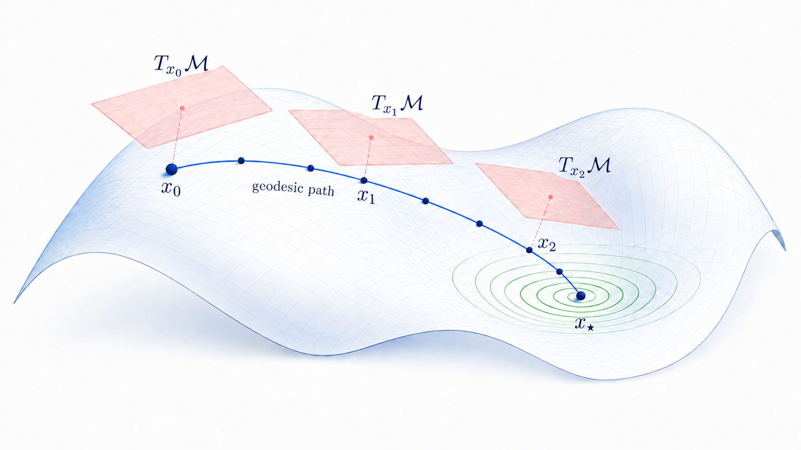

Riemannian optimization
Optimization methods that respect the geometry of manifolds.

My research lies in the theoretical and algorithmic foundations of optimization, with particular emphasis on Riemannian optimization, variational inclusion problems, and numerical optimization.
I currently focus on the development and convergence analysis of efficient iterative algorithms for constrained, structured, and large-scale optimization problems. I am also interested in applying these algorithms to machine learning and data-driven decision-making problems.
I use Julia and MATLAB for computational experiments and the implementation of optimization algorithms.
I completed my Ph.D. in Mathematics from Aligarh Muslim University in 2024 under the supervision of Prof. Qamrul Hasan Ansari. My doctoral research focused on variational and optimization problems on manifolds.
I was a Research Visitor at China Medical University Hospital and National Sun Yat-sen University, Taiwan, from October to November 2022.
Research interests
Optimization methods that respect the geometry of manifolds.
Inclusion problems, variational inequalities, and fixed-point methods.
Efficient methods for large-scale and constrained problems.
Optimization tools for machine learning and data-driven decision-making applications.

Current position
Postdoctoral Fellow at King Fahd University of Petroleum and Minerals, Dhahran, Saudi Arabia.
2025—Present Postdoctoral Fellow, KFUPM
2024—2025 Assistant Professor, Glocal University
2022 Research Visitor, Taiwan
Selected work
Get in touch
I am open to research collaborations in Riemannian optimization, variational analysis, numerical optimization, and related applications.
moin.uddin@kfupm.edu.saumoin2723@gmail.com